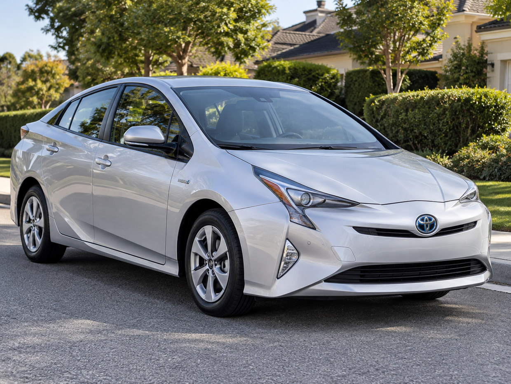
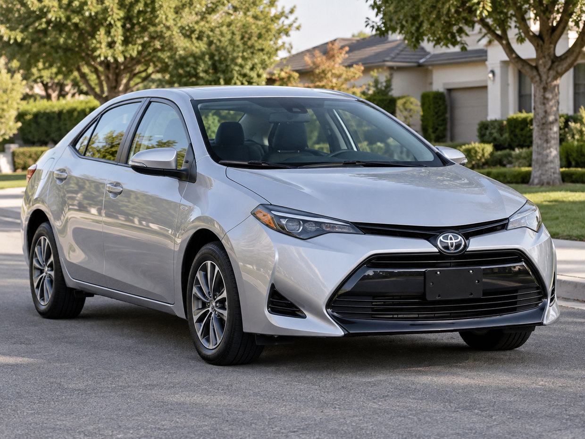
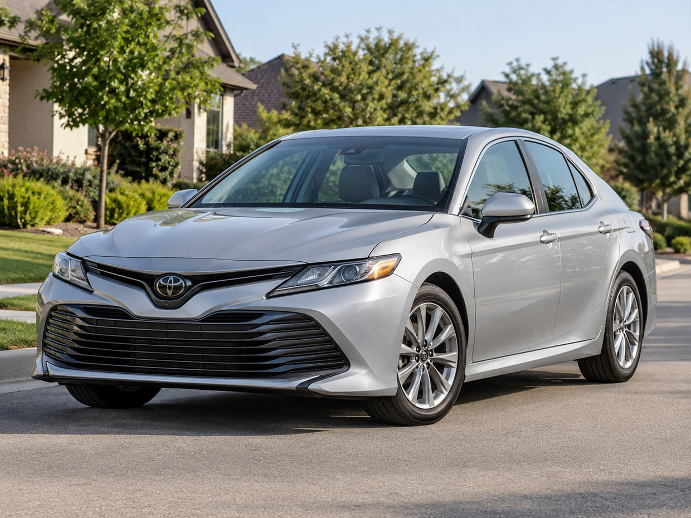

دودج تشالنجر
2020
اسأل عن خيارات التقسيطمستشارك للسيارات — سيارات مستعملة بالأقساط، وحلول تمويل تناسبك
حتى لو عندك كريدت ضعيف، تاريخ ائتماني محدود، أو دخل منخفض، بنساعدك تستكشف خيارات شراء وتمويل السيارات في شيكاغو وإلينوي.
اطلب مساعدة بشراء سيارةاتصل بعلي: 708-979-1279صور من الشارع • موديلات 2018–2020
2020
اسأل عن خيارات التقسيط2019
اسأل عن خيارات التقسيط2020
اسأل عن خيارات التقسيط2019
اسأل عن خيارات التقسيط2020
اسأل عن خيارات التقسيطسيارات مستعملة عملية ومحبوبة • أمثلة من موديلات 2018–2020
2018–2020
اسأل عن خيارات التقسيط2018–2020
اسأل عن خيارات التقسيط
2018–2020
اسأل عن خيارات التقسيط
2018–2020
اسأل عن خيارات التقسيط2018–2020
اسأل عن خيارات التقسيط
2018–2020
اسأل عن خيارات التقسيطاحسب القسط الشهري حسب سعر السيارة، ضريبة ثابتة 10%، رسوم ثابتة $775، نسبة الفائدة ومدة التمويل. بدون دفعة أولى.
أدخل سعر سيارة أكبر من صفر، ونسبة فائدة صحيحة بين 0% و100%.
ضريبة المبيعات 10% ورسوم التسجيل والـ Doc Fee بقيمة $775 ثابتتان. لا تُحسب أي دفعة أولى.
| الشهر | القسط | أصل القرض | الفائدة | الرصيد |
|---|
هذه حاسبة تقديرية: ضريبة 10% من سعر السيارة، زائد $775 رسوم ثابتة، بدون دفعة أولى. الأقساط مقرّبة لأقرب دولار، وقد تختلف الضرائب والرسوم والفائدة الفعلية وشروط التمويل.
تبحث عن سيارة مستعملة في شيكاغو أو أوك لون أو أورلاند بارك أو هومر غلين؟ استكشف خيارات السيارات المستعملة والأقساط مع علي سايس. الموافقة والدفعة الأولى تعتمد على الدخل والكريدت وشروط جهة التمويل والسيارة.
تبحث عن سيارة مستعملة بالتقسيط في شيكاغو؟ سواء كان تقييمك الائتماني ضعيفاً أو متوسطاً أو سجلك الائتماني محدوداً، يمكننا مساعدتك في استكشاف الخيارات المتاحة. الموافقة والفائدة والدفعة الأولى تعتمد على تقييم الجهة الممولة والدخل والسيارة.
قد تتوفر خيارات حسب الدخل والديون والسجل الائتماني والسيارة. الموافقة غير مضمونة.
تختلف الفائدة والشروط حسب الجهة الممولة وحالتك، ولا توجد درجة موحدة لكل الجهات.
قد تتوفر خيارات للمشترين لأول مرة، وقد يُطلب إثبات دخل وسكن.
تختلف الدفعة الأولى حسب السيارة والممول، ولا نضمن تمويلاً بدون دفعة.
قد تكون الخيارات محدودة وتعتمد على تفاصيل الحالة وتاريخها.
شيكاغو وضواحي إلينوي ومنها أوك لون وأورلاند بارك وهومر غلين وبالوس هيلز وتينلي بارك.